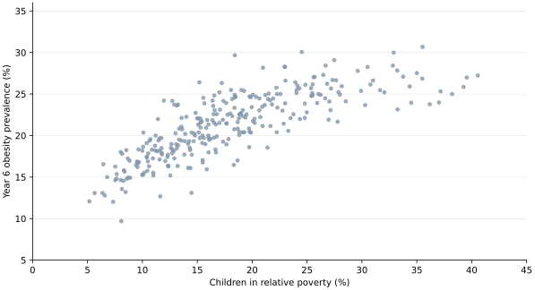
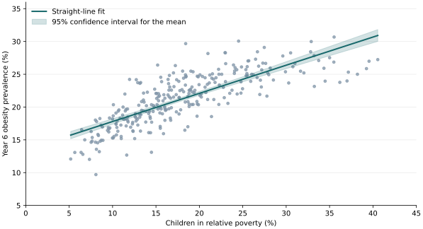

Child poverty and Year 6 obesity
Research question: In 2024/25, across English local authorities, is a higher child poverty rate associated with higher Year 6 obesity prevalence?
Our hypothesis is that there is expected to bea positive association. In a straight-line model, the null hypothesis is a zero slope and the alternative hypothesis is represented by a positive slope.
Literature review
Datasets
- Year 6 obesity prevalence, including severe obesity, among children aged 10–11 in academic year 2024/25. OHID Fingertips, indicator 90323
- Percentage of children under 16 living in relative low-income families before housing costs, financial year ending March 2025. ONS Explore Local Statistics, using DWP data
We matched 296 lower-tier local authorities by official area code. The City of London and Isles of Scilly had no obesity figure. We used the 294 councils with both measures. The reporting periods overlap and the two measures use different age groups.
Exploratory analysis

The scatterplot showed a positive overall association.
Statistical methods
We calculated Pearson’s correlation and fitted an ordinary least squares regression with Year 6 obesity prevalence as the outcome and child poverty as the predictor. The shaded area shows the 95% confidence interval for the mean fitted obesity prevalence.

Results
| Measure | Estimate |
|---|---|
| Pearson correlation | 0.79 |
| Obesity difference per 10 percentage points higher poverty | +4.29 percentage points (95% CI 3.91 to 4.67) |
| R² | 0.63 |
| Residual standard deviation | 2.43 percentage points |
| Residual variance | 5.93 squared percentage points |
Evaluation
Further research
- Compare the estimate before and after accounting for region.
- Check which councils and measures are comparable in 2022 and 2025, then examine whether changes in poverty and obesity move together.
References
- Ernest, D.K. et al. (2025) ‘A scoping review of the social determinants of pediatric and adolescent obesity’, International Journal of Pediatrics, 2025, 8871022. DOI
- Office for Health Improvement and Disparities (2025) National Child Measurement Programme annual report, academic year 2024 to 2025, England. Report
- Office for Health Improvement and Disparities, Fingertips. Indicator 90323
- Office for National Statistics, Explore Local Statistics. Child poverty indicator